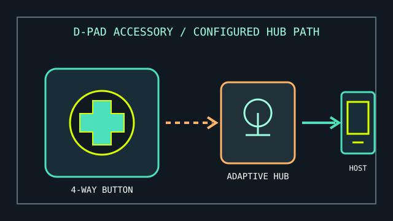

[ ADAPTIVE ACCESSORIES // DIRECTIONAL CONTROL ]
Microsoft Adaptive D-pad Button
A four-direction button accessory for assigning directional actions through the Microsoft Adaptive Hub.

MODEL IDENTIFICATION: Adaptive D-pad Button (Microsoft Adaptive Accessories; retail SKU and regional bundle may vary). Confirm the label and included attachment before purchasing replacements.
Model specifications
| Catalog leaf | Adaptive and switch-access controls |
|---|---|
| Exact model / identifier | Microsoft Adaptive D-pad Button; a button-top accessory, not a standalone host controller. |
| Mechanism and primary specifications | Four-way directional tactile control with a removable/customizable button top in Microsoft’s Adaptive Accessories system. |
| Host interface and compatibility | Connects to a Microsoft Adaptive Hub; the hub then presents configured actions to a supported Windows host over its own wired or wireless connection. The D-pad does not pair directly to a PC as an independent keyboard or gamepad. |
| Revision identification | Record the hub model, button top, connection method, and assigned actions separately; similar Adaptive Button accessories are not interchangeable by assumed function. |
Compatibility, setup & limitations
- Pair and configure through the Adaptive Hub using Microsoft’s documented adaptive-accessory setup; verify the hub is present and configured before attributing any host input issue to the D-pad.
- Four directional actions are discrete button events, not analog pointer movement or a general-purpose joystick axis.
- Host behavior depends on the hub’s pairing/configuration and the receiving operating system or application; do not assume direct console, Bluetooth, or USB functionality from the button accessory alone.
- Inspect the attachment fit and press geometry for the individual user; a direction pad may be difficult to isolate for someone with limited directional discrimination or unintended contact.
Preservation and service
Keep the accessory and hub labels together in the equipment record. Avoid liquid entry, forced removal of the top, and unverified third-party attachments; log the configured actions and pairing host after setup.
Separate a physical activation test from host-side behavior and record the hub firmware/software and connection type used.
Manufacturer sources
- Microsoft Store — Adaptive D-pad ButtonProduct family and accessory overview.
- Microsoft Support — How to use Microsoft adaptive buttonsSetup and use guidance for Adaptive Buttons and their hub relationship.
Check current product availability and the hub’s published compatibility requirements for the intended host.